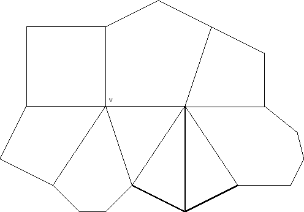
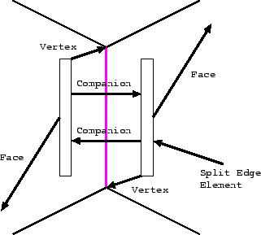
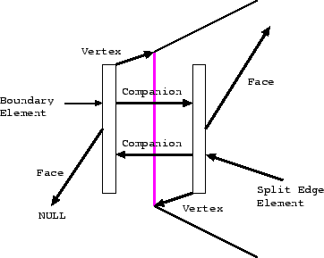
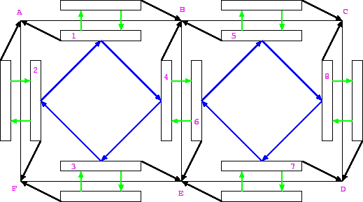
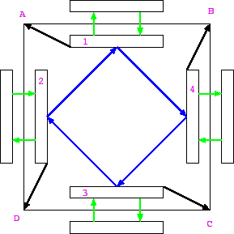
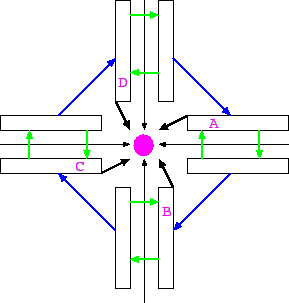

Split Edge Structure for Subdivision Surfaces
Benjamin F. Gregorski
Abstract:
The purpose of this document is to detail the construction of a split-edge data structure used in a subdivision surface implementation.
A subdivision surface typically begins as some sort of polygonal base mesh
of arbitrary topology that is then refined according to the subdivision algorithm.
Since the subdivision process typically involves operations around faces, edges and vertices,
it is necessary to have a data structure that allows efficient movement around all three
of these geometric primitives.
Figure 1 shows a portion of an unstructured mesh. The mesh contains polygons
with an arbitrary number of sides, and vertices of arbitrary valence.
It is assumed that all edges are shared by one or two faces. Edges that belong to one
face are called boundary edges.
Figure 1:
An unstructured mesh
|

|
The split edge data structure represents each edge as two split edges; one split edge on
each side of the edge. Figure 2 shows a split edge pair for a non-boundary edge.
All non-boundary split edges belong to a valid face or polygon.
A split edge element contains at least three pointers which express the connectivity of the mesh.
The companion pointer points the other split edge in the split edge pair.
The vertex pointer points to one of the vertices that make up the edge.
The vertex pointer for a split edge's companion always points to the other vertex that makes up the edge.
Thus, a split edge and its companion never point to the same vertex.
The face pointer points to the split edge obtained by traversing the face to which the split edge belongs
in a clockwise or counter-clockwise manner. Either one is acceptable, and I generally keep both
clockwise and counter-clockwise pointers.
Figure 2:
The split edge structure about an edge
|

|
The split edge data structure can easily be adapted to deal with meshes that are not completely closed.
Figure 3 shows the split edge structure around aboundary edge.
The split edges for all edges in mesh are always allocated as split edge pairs. This is done so that
split edges are always able to query their companion for the other vertex in the edge. This is done
as opposed to querying the face pointer and asking for the vertex. A boundary edge is thus determined
by whether or not a split edge has a valid face pointer. If one split edge in a split edge pair
has a NULL face pointer, the edge is a boundary edge.
Figure 3:
The split edge structure about a boundary edge
|

|
Figure 4 shows two quadrilaterals and their split edge structures. Both polygons are oriented
counter-clockwise. The polygon on the left is defined by vertices A-F-E-B. The polygon on the right is defined
by vertices B-E-D-C.
Figure 4:
Split edge structure for part of a mesh
|

|
When polygon A-F-E-B is created, split edge pairs 1, 2, 3, and 4 are created (if
they do not already exist), and the half edges are connected in the order that the vertices are
read in. Thus split edge 1 points to vertex A, split edge 2 to vertex F, split edge 3 to vertex E, and
split edge 4 to vertex B. The face pointers are set to the
next clockwise split edge around the face. The companion pointers are
set when the pair of split edges is created.
When polygon B-E-D-C is created, split edge pairs 5, 6, 7, and 8 are created (if they do not already exist).
In this example, split edge pair 6 already exists as split edge pair 4. The unused split edge in the pair
points to vertex E. Split edge 5 points to B, split edge 7 points to B, and split edge 8 points to C.
The face pointers are connect in the same clockwise order as before.
The main purpose behind building the mesh structure in this way is to be able to traverse around
faces, edges, and vertices in a efficient manner. This mesh traversal can be done very simply by building
iterators that traverse around faces and vertices. The ability to perform these simple traversals make
implementing subdivision surfaces very easy.
A face in an unstructured mesh is defined by one non-boundary split edge.
One can touch all of the vertices in a face by simply following the face pointers of the split edges
until the starting split edge is reached.
Figure 5:
Polygon with vertex and face pointers
|

|
Figure 5 shows a quadrilateral face with the vertex and face pointers.
Starting at split edge A, we can touch the vertices of the face in the order A-B-C-D by following the
face pointers starting at split edge A.
A similar process can be followed by starting at any of the split edges that make up the face.
A vertex in an unstructure mesh is defined by one split edge that points to the vertex.
One can touch all of the split edges pointing to the vertex by first following the companion
pointer and then the companion's face pointer around the vertex.
Figure 6:
A vertex and its incident edges
|

|
Figure 6 shows a vertex and the edges incident to it. Starting a split edge A
one can iterate around the vertex in A-B-C-D order
by first going to A's companion's face pointer to get to B and then following the pointers
around the vertex in a similar manner. In the case of boundary vertices, the iterator
stops whn it encounters a NULL pointer a proceeds in the opposite directiomn. To facilitate
this I keep face pointers in both the clockwise and counter-clockwise directions.
Initially I follow clockwise pointers and if I encounter a boundary I return to the starting
split edge and follow counter-clockwise pointers.